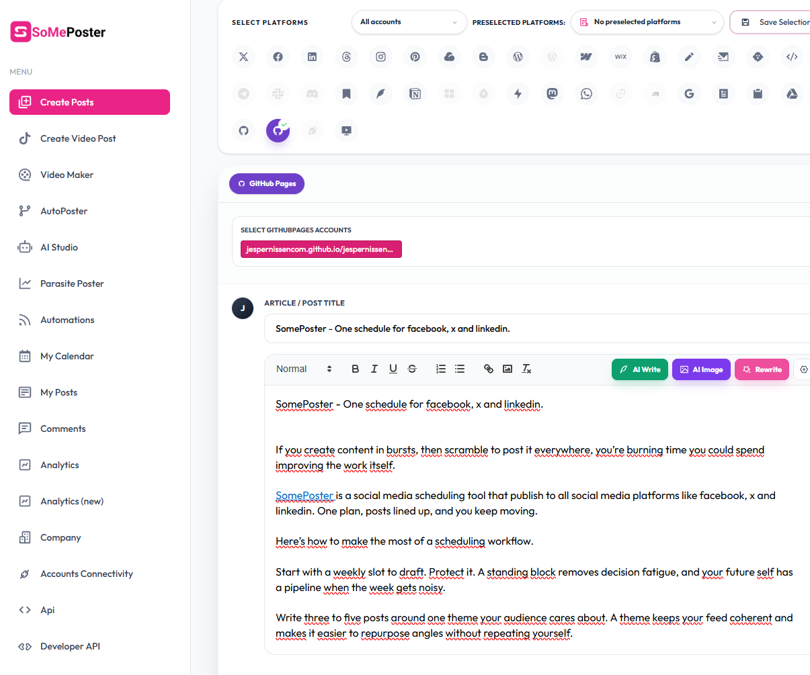

SomePoster - One schedule for facebook, x and linkedin.

If you create content in bursts, then scramble to post it everywhere, you’re burning time you could spend improving the work itself.
SomePoster is a social media scheduling tool that publish to all social media platforms like facebook, x and linkedin. One plan, posts lined up, and you keep moving.
Here’s how to make the most of a scheduling workflow.
Start with a weekly slot to draft. Protect it. A standing block removes decision fatigue, and your future self has a pipeline when the week gets noisy.
Write three to five posts around one theme your audience cares about. A theme keeps your feed coherent and makes it easier to repurpose angles without repeating yourself.
Save rough headline options. Short for x, a tighter summary for linkedin, and a friendly hook for facebook. Same idea, different doorways so each platform feels native.
Keep one content calendar open while you write. A simple grid with dates, platforms, and status reduces duplicate posts and helps you see gaps before they go live.
Batch visuals. Create a square and a wide header version so you are not recropping at the last minute. Use readable type, high contrast, and export at platform-friendly sizes to avoid fuzzy images.
Mind the basics that cost reach. Add clear alt text, keep text minimal on images, and front-load the point in the first line so truncation does not hide it.
Common traps to avoid: copying the exact same caption everywhere, posting at random times with no rhythm, and trusting your memory to track what went out. Each one leads to inconsistent tone and missed slots.
What to do instead: keep your drafts in one place, schedule ahead, and revisit the queue once a week to tighten language before it goes live. A 10-minute pass catches buried leads and awkward phrasing.
If you already know your next five posts, you are ready to schedule them in one sitting and move on to higher-value work.
Want a cleaner system for getting your work out across facebook, x and linkedin without juggling tabs?
Reply “schedule” and we’ll share a simple checklist you can use with SomePoster today.